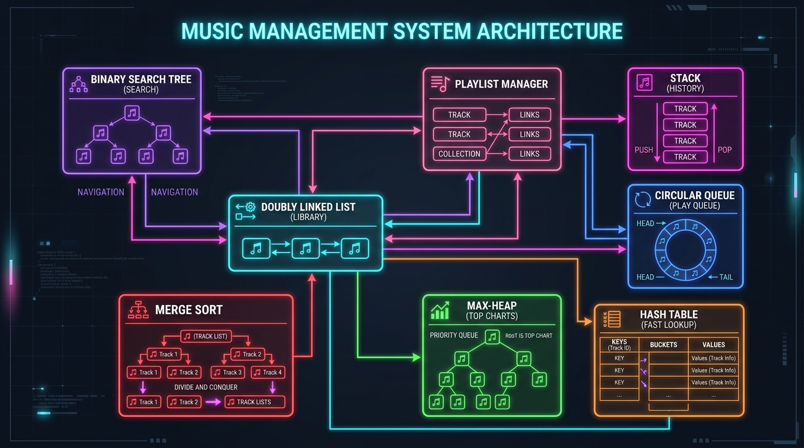

A high-performance audio catalog and playback queue engine engineered in pure C with 8 core Data Structures & Algorithms, integrated with an embedded HTTP server and web interface.
Overcoming computational bottlenecks in conventional music players and media storage.
Naive systems store audio tracks in unindexed flat arrays. As libraries scale to 50,000+ tracks, searching by title or finding song metadata degrades to O(n) linear time, causing audio stutters and sluggish search latency.
Standard queue implementations on plain arrays require expensive O(n) element shifts every time a song finishes playing, or result in wasted buffer space when head pointers simply increment without wrapping.
Calculating live "Top 10 Most Played" or "Highest Rated" songs traditionally forces an expensive full-table sort costing O(n log n) on every single playback event, starving playback threads of precious clock cycles.
Where the VIBE architecture delivers tangible performance and architectural advantages.
Embedded systems with constrained memory & high reliability
Cars and embedded smart speakers run on strict RAM limits (under 64MB). VIBE’s lightweight pure C memory footprint without heavy runtimes (no Node/Python overhead) makes it ideal for instantaneous local playback, circular queuing, and offline steering-wheel controls.
Zero-latency track queuing, previewing & history undo
During live DJ sets, track scheduling cannot tolerate stutter. DJs require an instant FIFO play queue, a LIFO stack to instantly rewind/undo mistakenly triggered tracks, and instant O(1) song identification by unique track ID.
Self-hosted streaming server for local home networks
Functions as an ultra-fast local server running on a Raspberry Pi or NAS. Hosts local FLAC/MP3 catalogs, handles HTTP client requests asynchronously, and serves modern glassmorphic web clients without external internet dependencies.
Standardized reference architecture for algorithms in practice
Demonstrates how abstract data structures taught theoretically (BSTs, Heaps, Linked Lists, Hash Tables) unify inside one cohesive, production-grade product to solve concrete software engineering problems simultaneously.
How 8 fundamental data structures synchronize synchronously to power the player.

Maintains sequential master catalog. Allows O(1) bi-directional playlist navigation (Next / Previous).
BST organizes titles for prefix search & sorted traversal. Hash table gives O(1) key-based ID lookup.
FIFO Queue buffers upcoming tracks with zero memory shifts; LIFO Stack logs played history for rollback.
Maintains priority order based on play count or user ratings without sorting the entire dataset.
Bi-directional sequential traversal and dynamic memory management for the track catalog.
Music players require seamless Next Song and Previous Song operations. A Doubly Linked List provides pointers in both directions (prev and next), eliminating the need to search backward.
lib_display_reverse).[NULL] ← [Song 1: Blinding Lights] ↔ [Song 2: Starboy] ↔ [Song 3: After Hours] → [NULL]
FIFO scheduling for upcoming songs and LIFO tracking for playback history & back navigation.
Constant time O(1) buffer without element shifting
Instantaneous "Previous Song" tracking & undo
O(log n) lexicographical search coupled with O(1) average constant-time ID retrieval.
Enables O(log n) search by song title and ordered alphabetical display using in-order traversal:
Maps internal numeric song IDs to song memory with O(1) average lookup using separate chaining:
Complete binary tree maintaining real-time trending charts by play count or user rating.
In a commercial streaming app, users constantly want to know: "What is the #1 trending song?" or "Show me the Top 5 tracks."
Running a full sort takes O(n log n) every time play count increments. A Max-Heap:
data[0].HEAP_BY_PLAYS or HEAP_BY_RATING.Multi-attribute sorting (Title, Artist, Plays, Duration, Rating) + Binary Search on sorted data.
Divide-and-conquer algorithm with guaranteed O(n log n) worst-case complexity.
Partitioning algorithm with O(n log n) average case and minimal memory overhead.
Once tracks are sorted by title, search operations execute in O(log n) time:
Hierarchical data model decoupling song storage from playlist membership.
Playlists do not duplicate song structs. Doing so would multiply memory usage and risk stale data when play counts update.
PlaylistManager maintains a singly linked list of Playlist nodes.PLSongNode storing integer song_id references.Bridging high-performance C data structures with modern interactive browser client.
Executes all business logic, memory allocation, and algorithmic operations:
Implemented in server.c using raw Windows Sockets (Winsock2):
Interactive Spotify-grade interface created in index.html & app.js:
Theoretical and empirical comparison proving performance gains over naive implementations.
| Operation | Data Structure Used | Naive Array Time | VIBE Architecture Time | Space Complexity |
|---|---|---|---|---|
| ID Song Lookup | Hash Table (Separate Chaining) | O(n) linear scan | O(1) average | O(n) |
| Title Search | Binary Search Tree (BST) | O(n) full scan | O(log n) | O(n) |
| Enqueue Song | Circular Queue (FIFO) | O(1) append / O(n) realloc | O(1) guaranteed | O(k) bounded |
| Dequeue / Play Next | Circular Queue (FIFO) | O(n) left element shift | O(1) pointer move | O(1) aux |
| Rewind to Prev Song | History Stack (LIFO) | O(n) reverse scan | O(1) stack pop | O(m) bounded |
| Find Top Played Song | Max-Heap (Root Peek) | O(n) scan or O(n log n) sort | O(1) peek | O(n) |
| Full Catalog Sort | Merge Sort (Stable) | O(n²) Bubble/Insertion | O(n log n) stable | O(n) |
Synthesis of accomplishments and future extensions for high-scale distributed audio.
lib_destroy, bst_destroy, hash_destroy) preventing memory leaks.Demonstration code, interactive web player, and modular C test harnesses are ready for live inspection.
Live REST Server & Web UI
CLI Interactive Engine